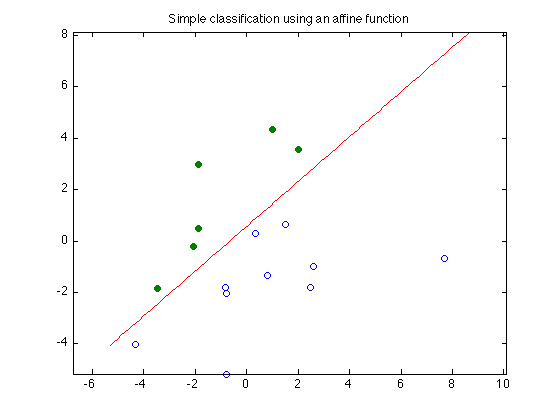

% Boyd & Vandenberghe "Convex Optimization" % Joelle Skaf - 10/16/05 % (a figure is generated) % % The goal is to find a function f(x) = a'*x - b that classifies the points % {x_1,...,x_N} and {y_1,...,y_M}. a and b can be obtained by solving a % feasibility problem: % minimize 0 % s.t. a'*x_i - b >= 1 for i = 1,...,N % a'*y_i - b <= -1 for i = 1,...,M % data generation n = 2; randn('state',3); N = 10; M = 6; Y = [1.5+1*randn(1,M); 2*randn(1,M)]; X = [-1.5+1*randn(1,N); 2*randn(1,N)]; T = [-1 1; 1 1]; Y = T*Y; X = T*X; % Solution via CVX fprintf('Finding a separating hyperplane...'); cvx_begin variables a(n) b(1) X'*a - b >= 1; Y'*a - b <= -1; cvx_end fprintf(1,'Done! \n'); % Displaying results linewidth = 0.5; % for the squares and circles t_min = min([X(1,:),Y(1,:)]); t_max = max([X(1,:),Y(1,:)]); t = linspace(t_min-1,t_max+1,100); p = -a(1)*t/a(2) + b/a(2); graph = plot(X(1,:),X(2,:), 'o', Y(1,:), Y(2,:), 'o'); set(graph(1),'LineWidth',linewidth); set(graph(2),'LineWidth',linewidth); set(graph(2),'MarkerFaceColor',[0 0.5 0]); hold on; plot(t,p, '-r'); axis equal title('Simple classification using an affine function'); % print -deps lin-discr.eps
Finding a separating hyperplane... Calling sedumi: 16 variables, 3 equality constraints For improved efficiency, sedumi is solving the dual problem. ------------------------------------------------------------ SeDuMi 1.21 by AdvOL, 2005-2008 and Jos F. Sturm, 1998-2003. Alg = 2: xz-corrector, Adaptive Step-Differentiation, theta = 0.250, beta = 0.500 eqs m = 3, order n = 17, dim = 17, blocks = 1 nnz(A) = 48 + 0, nnz(ADA) = 9, nnz(L) = 6 it : b*y gap delta rate t/tP* t/tD* feas cg cg prec 0 : 9.03E+01 0.000 1 : 0.00E+00 3.20E+01 0.000 0.3538 0.9000 0.9000 -2.42 1 1 3.8E+01 2 : 0.00E+00 7.37E+00 0.000 0.2305 0.9000 0.9000 -0.26 1 1 1.4E+01 3 : 0.00E+00 2.38E-01 0.000 0.0323 0.9900 0.9900 0.62 1 1 5.6E-01 4 : 0.00E+00 8.82E-06 0.000 0.0000 1.0000 1.0000 0.99 1 1 iter seconds digits c*x b*y 4 0.0 Inf 0.0000000000e+00 0.0000000000e+00 |Ax-b| = 0.0e+00, [Ay-c]_+ = 0.0E+00, |x|= 0.0e+00, |y|= 5.0e+00 Detailed timing (sec) Pre IPM Post 1.000E-02 3.000E-02 0.000E+00 Max-norms: ||b||=0, ||c|| = 1, Cholesky |add|=0, |skip| = 0, ||L.L|| = 1. ------------------------------------------------------------ Status: Solved Optimal value (cvx_optval): -0 Done!
